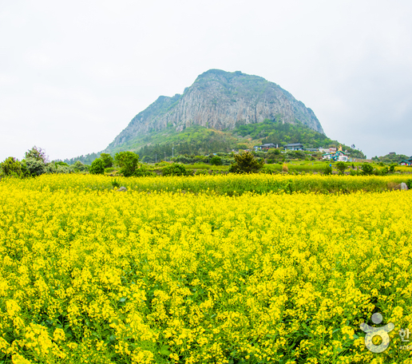
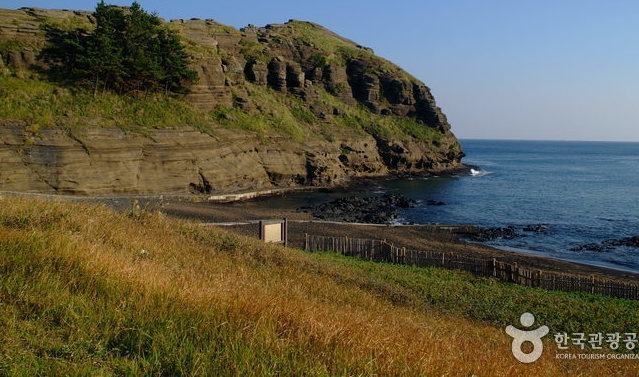
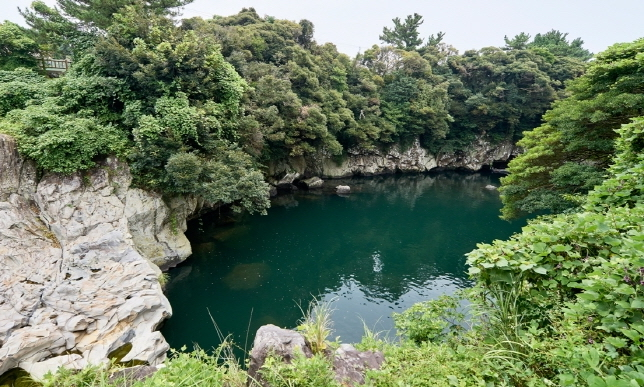

주요 관광지
-

산방산
제주 서남부 지역을 달리다 보면 보이는 산방산은 거대한 조각 작품을 보는 듯한 웅장함을 자랑한다. 봄에는 유채꽃이 빽빽하게 만발하기 때문에 노란빛과 어우러진 산방산의 경치를 보러 많은 사람들이 찾는다.
입장료 | 1인당 1,000원 -

섭지코지
제주 동부 해안에 볼록 튀어나온 섭지코지는 성산 일출봉을 배경으로한 해안 풍경이 일품이다. 들머리의 신양해변백사장, 끝머리 언덕위 평원에 드리워진 유채밭, 여유롭게 풀을 뜯는 제주조랑말들, 바위로 둘러친 해안절벽과 우뚝 치솟은 전설 어린 선바위 등은 전형적인 제주의 아름다움을 만날 수 있다.
-

용머리해안
산방산 해안에 있으며, 바닷속으로 들어가는 용의 머리를 닮았다 하여 붙여진 이름이다. 겉으로 보면 평범하지만 좁은 통로를 따라 바닷가로 내려가면 수천 만 년 동안 층층이 쌓인 사암층 암벽이 나온다. 수중폭발에 의해 형성된 화산력 응회암층으로 수평층리·풍화혈·돌게구멍·해식동굴·수직절리단애·소단층명 등이 어우러져 절경을 이룬다. 해안 오른쪽에는 반원형으로 검은모래사장이 펼쳐져 있다.
입장료 | 대인 2,000원 어린이/청소년(24세 이하) 1,000원 -

쇠소깍
서귀포시 하효동과 남원읍 하례리 사이를 흐르는 효돈천 하구를 가리키며, 이곳은 제주 현무암 지하를 흐르는 물이 분출하여 바닷물과 만나 깊은 웅덩이를 형성한 곳이다. 쇠소깍이라는 이름은 제주도 방언이다. 쇠는 효돈마을을 뜻하며, 소는 연못, 각은 접미사로서 끝을 의미한다.
입장료 | 무료
나룻배 5,000원 카약 20,000원
맛집 및 카페
-

제주 색달식당
한식
주소 | 제주 서귀포시 예래로 255-18 (서귀포시 하예동350) 1층 -

원앤온리
카페/베이커리
주소 | 제주 서귀포시 안덕면 산방로 141 -
오는정김밥
한식
주소 | 제주 서귀포시 동문동로 2